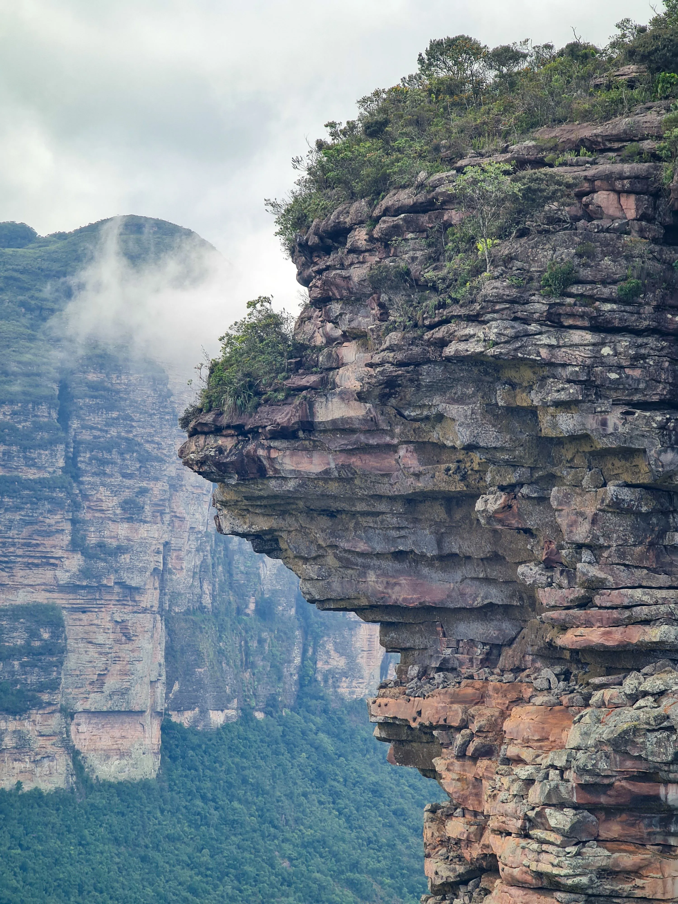

Data
Localização: Bahia, Brasil
Região: Nordeste
Parque Nacional: Criado em 1985
Área do parque: 152 mil hectares
Principal cidade: Lençóis
Vegetação: Cerrado e Caatinga
Relevo: Serras e montanhas
Atração: Cachoeira da Fumaça
Clima ⛅
Clima: Tropical de altitude
Condições: Parcialmente nublado
Temperatura: 22 °C
Velocidade do vento: 5 km/h
Sensação térmica: N/A